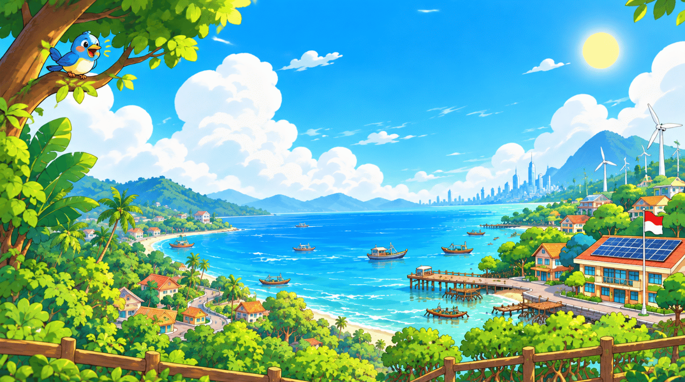
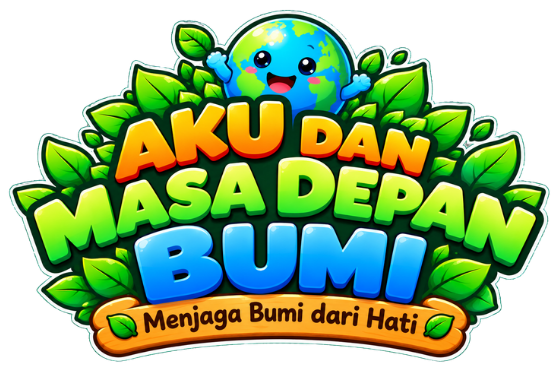
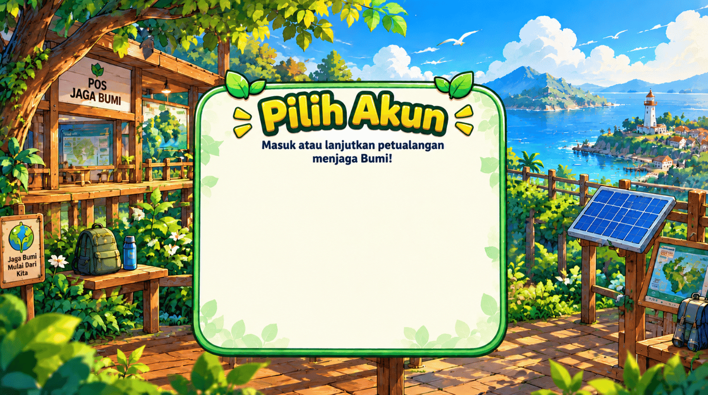
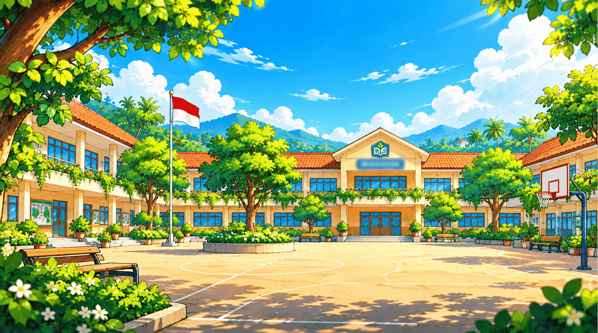

TunasSiap bertualang denganku?
Menyiapkan petualangan…0%


© 2026 Nailul Authar, S.Kom. Hak Cipta Dilindungi. Dikembangkan untuk Lomba Internasional Media Pembelajaran Perubahan Iklim (PPI) 2026.


Putar layar ke mode lanskap agar lebih nyaman.